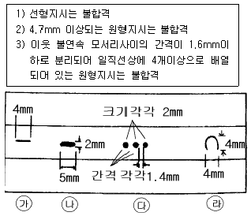

침투비파괴검사산업기사(구) (2003-08-31 기출문제)
1과목: 침투탐상시험원리
1. 침투탐상시험에 대한 설명중 옳은 것은?
- 담금에서 검사물의 침투제가 유화제를 오염시킨다.
- 유화제가 오염되어도 유화작용에는 영향을 미치지 않는다.
- 유화제는 침투제에 대한 오염 허용한계가 없다.
- 유화제가 침투제에 의해 오염되면 유화시간은 빨라진다.
(정답률: 알수없음)

2. 수세성 침투제를 사용할 때 가장 주의해야 할 경우는?
- 침투시간은 수압에 따라 달리 적용한다.
- 과잉 세척을 하지 말아야 한다.
- 유화제를 과하게 적용시키지 않아야 한다.
- 과잉 침투제의 제거시 시험면의 배경이 안보이도록 완전히 세척이 되어야 한다.
(정답률: 알수없음)
3. 티타늄 합금의 침투탐상시험시 침투제에 섞여 있어서는 안되는 성분은?
- 탄소 - 기름
- 할로겐 용제
- 유화제 - 기름
- 형광물질
(정답률: 알수없음)
4. 다음 중 침투탐상시험 작업에서 검사원이 수행한 조치로서 신뢰성이 떨어지는 경우는?
- 나타난 지시를 주의깊게 관찰하였다.
- 지시의 판별이 곤란하여 다른 비파괴검사를 실시하였다.
- 지시가 연속된 선형으로 나타나서 균열성 결함으로 판정하였다.
- 지시가 약하게 나타났기 때문에 쇼트 블라스팅을 실시한 후 재검사하였다.
(정답률: 알수없음)
5. 다음 중 침투탐상시험을 시행하기 전에 행하는 세척방법으로 가장 효과적인 방법은?
- 모래 분사
- 와이어브러시의 이용
- 그라인딩
- 증기 세척
(정답률: 알수없음)
6. 방사선투과시험과 침투탐상시험을 비교할 때 침투탐상시험의 장점이 아닌 것은?
- 표면 개구 결함 검출 가능
- 내부 결함 검출 가능
- 전면을 100% 시험할 수 있음
- 시험결과를 빠르게 얻을 수 있음
(정답률: 알수없음)
7. 침투탐상시험에서 시험체의 재질에 관계없이 적용할 수있는 전처리법은?
- 그라인더에 의한 전처리
- 증기세정에 의한 전처리
- 와이어 브러시에 의한 전처리
- 산세정에 의한 전처리
(정답률: 알수없음)
8. 침투제에 대한 설명중 틀린 것은?
- 저점성 침투제가 고점성 침투제보다 대체적으로 빨리 쉽게 불연속에 침투해 들어간다.
- 점성은 침투제의 침투 속도보다 침투능에 관계된다.
- 침투제의 휘발성은 염료의 밝기에 관계된다.
- 적심성은 침투능에 직접 관련있는 성질이 아니다.
(정답률: 알수없음)
9. 다음 중 표면 검사방법으로서 다른 비파괴검사법으로는 곤란하여 침투탐상검사로만 적용할 수 있는 것은?
- 탄소강
- 스테인리스강
- 세라믹
- 동합금
(정답률: 알수없음)
10. 다음 검사부품 중 통상 침투탐상시험을 적용하기 어려운 것은?
- 유약을 칠하지 않은 다공의 세라믹
- 티타늄
- 스텐인리스 스틸
- 주철
(정답률: 알수없음)
11. 형광침투탐상법에 비하여 염색침투탐상법의 장점 설명으로 옳은 것은?
- 자외선등이 필요 없다.
- 형광침투탐상법보다 감도가 더 예민하다.
- 형광침투탐상법보다 침투성이 우수하다.
- 염색 침투탐상법은 독성이 없고 형광 침투법은 독성이 있다.
(정답률: 알수없음)
12. 후유화성 형광법을 사용하여 탐상면에 존재하는 미세하고 긁힘자국 같은 불연속의 검출시 유화 시간은 중요하게 처리되어야 하는데, 이 때의 유화시간으로 다음 중 적당한 것은?
- 10초
- 5초
- 2-3초
- 실험에 의해 구한다.
(정답률: 알수없음)
13. 후유화성 형광침투탐상시험에서 유화제의 적용시기에 대한 설명 중 올바른 것은?
- 침투제를 적용하기 전에
- 수세 작업후에
- 침투시간이 경과한 후에
- 현상시간이 경과한 후에
(정답률: 알수없음)
14. 다음 재료 중 점성(Viscosity)이 가장 큰 것은?
- 물
- 에테르
- 윤활유
- 에틸알콜
(정답률: 알수없음)
15. 침투탐상시험시 검사표면이 거칠 때 유화시간은?
- 정상표면과 동일하다.
- 정상표면보다 더 길게 소요된다.
- 정상표면보다 더 짧게 소요된다.
- 표면의 거칠기와는 무관하다.
(정답률: 알수없음)
16. 침투탐상시험시 탐상제에 관한 사항 중 옳지 않은 것은?
- 기준탐상제는 용기에 밀폐하여 차갑고 어두운 곳에 보관한다.
- 탐상제를 개방된 장치로 사용할 때에는 불순물의 혼입을 방지하도록 조치하여야 한다.
- 속건식현상제는 밀폐된 용기에 보관하여야 한다.
- 덩어리진 건식현상제는 잘게 부수어 사용한다.
(정답률: 알수없음)
17. 침투제의 물리적 특성을 시험하기 위하여 침투제를 100℉ 정도의 일정한 온도를 유지시키면서 그 결과를 Centistokes의 단위로 나타내는 시험 방법은?
- 비중 시험
- 점도 시험
- 염소함량 시험
- 오염도측정 시험
(정답률: 알수없음)
18. 디젤 엔진의 크랭크 축을 제작하는 가공 공정 중에서 고주파 열처리를 시행한 후에 고주파 열처리에서 발생된 결함을 검출하고자 한다. 가장 적합한 비파괴검사법의 조합은?
- 방사선투과검사와 초음파탐상검사
- 초음파탐상검사와 자분탐상검사
- 자분탐상검사와 침투탐상검사
- 방사선투과검사와 침투탐상검사
(정답률: 알수없음)
19. 침투탐상시험시 수세능력을 조정하는 유화제의 고유 특성이 아닌 것은?
- 활성
- 점성
- 물의 혼합정도
- 선명도
(정답률: 알수없음)
20. 다음 중 침투탐상시험시 감도를 떨어뜨리는 행위에 해당하는 사항은?
- 침투탐상시험이 시행된 시편을 그대로 재탐상 검사하였음
- 용제제거성 침투제 대신에 후유화성 침투제를 사용하였음
- 분무 방법 대신 침지시켜 시편에 침투제를 적용하였음
- 증기세척법으로 시편을 전처리 세척하였음
(정답률: 알수없음)
2과목: 침투탐상검사
21. 침투탐상시험에 사용하는 시험편 중 중앙부에 홈을 가공하여 양측을 2개조로 사용하는 경우가 있는데 이 때 중앙부의 홈이 필요한 이유는?
- 각 면에 적용한 액이 서로 섞이지 않도록 하기 위해
- 미세한 균열을 얻기 위해
- 표준 유화제를 사용하기 위하여
- 다른 재료로 되어 있기 때문에
(정답률: 알수없음)
22. 침투탐상시험후 결과의 기록으로 가장 효과적인 방법은?
- 전사테이프
- 스케치
- 천연색 사진
- 모양과 크기를 자세하게 치수로 기록한다.
(정답률: 알수없음)
23. 니켈 합금에 대해 침투탐상검사를 할 때에 침투탐상재료에 함유된 원소 중 규정 이상의 함량이 유해한 영향을 주는 것은?
- S
- CO2
- Br
- C
(정답률: 알수없음)
24. 용제 세척에 비하여 물(水)세척의 장점은?
- 검사에 특별한 조명이 불필요하다.
- 높은 곳에서의 검사가 용이하다.
- 탐상 감도가 높아진다.
- 넓은 부위의 검사에 적합하다.
(정답률: 알수없음)
25. 표면에 존재하는 결함을 침투탐상시험으로 검사할 때 다음 중 침투시간을 가장 길게 해야 할 시험체 재질과 결함의 종류는?
- 알루미늄 주조품 - 기공
- 마그네슘 주조품 - 탕계
- 강철 용접물 - 융합부족
- 황동판 - 균열
(정답률: 알수없음)
26. 침투탐상검사시 결함지시가 주로 원형으로 나타나는 불연속은?
- 균열
- 겹침
- 긁힘
- 기공
(정답률: 알수없음)
27. 다음 중 침투탐상시험으로 검사가 어려운 것은?
- 주물
- 철과 비철 재료의 혼합물
- 유리
- 다공성 재질로 만든 물질
(정답률: 알수없음)
28. 다음은 건조처리에 관한 설명이다. 옳은 것은?
- 건조는 세척방법에 관계없이 현상처리 전과 후에 수행한다.
- 습식현상법을 적용하는 경우에는 국부적으로 가열할 수 있는 적외선 건조를 하는 것이 바람직하다.
- 시험체의 두께가 두꺼워질수록 건조온도는 낮게하는 것이 바람직하다.
- 습식현상법을 적용하는 경우는 세척방법에 관계없이 현상처리후 건조시킨다.
(정답률: 알수없음)
29. 시험체의 표면에 페인트가 칠해진 부분에 침투탐상검사를 행할 때의 첫 단계는?
- 표면에 조심스럽게 침투액을 뿌린다.
- 페인트를 완전히 제거한다.
- 세척제로 표면을 닦아낸다.
- 페인트로 매끄럽게 칠해진 표면을 거칠게 하기 위하여 철 솔질을 한다.
(정답률: 알수없음)
30. 침투탐상시험법중 세척 조작이 쉽고 표면이 거친 시험체의 탐상에 적합한 방법은?
- 용제제거성 형광침투탐상시험법
- 수세성 염색침투탐상시험법
- 용제제거성 염색침투탐상시험법
- 후유화성 형광침투탐상시험법
(정답률: 알수없음)
31. 검사체 표면에서 액체의 퍼짐성은 침투성과 관련된 중요 한 인자이다. 그 관계식은? (단, SSL - 퍼짐성(Spreading Coefficient), YSG - 고체와 기체의 경계에서의 표면에너지, YL - 액체와 기체의 경계에서의 표면에너지, YSL - 고체와 액체의 경계에서의 표면에너지)
- SSL = YSG + (YL - YSL)
- SSL = YSL - (YSG - YL)
- SSL = YSL + (YSG + YL)
- SSL = YSG - (YL + YSL)
(정답률: 알수없음)
32. 수세성 형광침투탐상시험에 대한 장점이 아닌 것은?
- 수분이 있어도 침투액 성능에는 변화가 없다.
- 비교적 거치른 시험체에 대해서도 적용 가능하다.
- 넓은 면적을 단 한번의 조작으로 탐상하기 쉽다.
- 열쇠구멍이나 나사부와 같은 복잡한 현상을 한 것도 적용 가능하다.
(정답률: 알수없음)
33. 길이가 폭의 3배 이상 되는 지시를 선형지시라 하고 다음과 같은 합격기준이 주어졌다면 그림에서 나타난 지시중 합격될 수 있는 결함은?

- ㉮
- ㉯
- ㉰
- ㉱
(정답률: 알수없음)
34. 다음 중 거친 면을 가진 시험체에 가장 적합한 침투탐상검사 방법은?
- 용제제거성 염색침투탐상시험법
- 후유화성 형광침투탐상시험법
- 수세성 형광침투탐상시험법
- 후유화성 염색침투탐상시험법
(정답률: 알수없음)
35. 시험체를 침투액 탱크에 넣어서 검사할 때 옳은 것은?
- 시험체가 침투시간 동안 탱크내에 들어 있어야 한다.
- 시험체가 최소 침투시간의 반 동안은 탱크내에 있어야 한다.
- 시험체가 5분이상 침투액 탱크내에 있으면 안된다.
- 시험체의 표면에 침투액이 확실히 묻어있을 정도로 넣어 있으면 된다.
(정답률: 알수없음)
36. 탐상 표면에 적용된 침투제의 작용을 맞게 설명한 것은?
- 불연속에 흡수되는 작용이다.
- 모세관 현상에 의해 불연속부로 침투하는 작용이다.
- 중력에 의하여 불연속부로 침투하는 작용이다.
- 중력에 의하여 불연속부로 흡수되는 작용이다.
(정답률: 알수없음)
37. 염색침투탐상시험에서는 몇 Lux이상의 밝기에서 관찰해야 하는가?
- 150
- 250
- 350
- 450
(정답률: 알수없음)
38. 침투탐상검사의 장점이 아닌 것은?
- 미세한 균열을 찾을 수 있다.
- 작은 검사물을 검사하는 데 좋다.
- 비교적 단순한 검사법이다.
- 어떠한 온도에서도 가능하다.
(정답률: 알수없음)
39. 현상제나 침투제의 감도 시험에 사용되는 시험편은?
- 메니스커스 렌즈(Meniscus Lens)
- 고압으로 모래를 분사시킨 시험편
- 흡수지
- 균열이 있는 알루미늄 시험편
(정답률: 알수없음)
40. 다음 중 다른 침투탐상시험과 비교하여 후유화성 형광침투탐상시험의 장점은?
- 유화처리후에는 표면 침투제의 제거가 가능하다.
- 얕고 미세한 결함의 검출이 가능하다.
- 수도와 전기설비가 필요없다.
- 비교적 비용이 저렴하다.
(정답률: 알수없음)
3과목: 침투탐상관련규격
41. ASME Sec.V에 따라 염색침투탐상시험할 때 시험체 표면에서 가시광선의 조도는 최소한 몇 Lux 이상이어야 하는가?
- 32
- 90
- 500
- 3200
(정답률: 알수없음)
42. KS W 0916에서는 침투탐상시험이 완료되어진 검사물에 대해서는 모재에 영향을 주지 않는 범위내에서 시험체에 검사완료 표시를 하도록 규정하고 있다. 이 때 요구되는 표시 방법 중 옳지 않은 것은?
- 석필로 고유번호를 명기해 준다.
- 부식을 이용하여 표시한다.
- 가압 스탬핑해 준다.
- 꼬리표를 붙인다.
(정답률: 알수없음)
43. 침투탐상시험시 MIL I 25135에서 타입 Ⅱ, 방법 C 는?
- 그룹Ⅰ
- 그룹Ⅱ
- 그룹Ⅲ
- 그룹Ⅳ
(정답률: 알수없음)
44. ASME 규격에 따라 수세성 염색침투탐상시험법을 사용시 과잉침투제 제거를 위한 수세압력과 수세 온도는 다음 중 어느 값을 초과하지 않아야 하는가?
- 30psi, 70℉
- 40psi, 90℉
- 50psi, 110℉
- 60psi, 120℉
(정답률: 알수없음)
45. KS B 0816의 침투지시 모양분류중 독립지시의 종류가 아닌 것은?
- 갈라짐
- 선상
- 원형상
- 분산상
(정답률: 알수없음)
46. ASME Sec.V Art.6에 의거 침투탐상시험을 할 때 탐상제의 시험체 표면에서의 온도 범위로서 옳은 것은?
- 0∼16℃
- 10∼52℃
- 32∼90℃
- 43∼110℃
(정답률: 알수없음)
47. KS B 0816에 따른 침투시간을 좌우하는 인자가 아닌 것은?
- 침투액의 종류와 온도
- 시험품의 재질과 온도
- 예측되는 결함의 종류와 크기
- 시험품의 치수와 모양
(정답률: 알수없음)
48. 삭제된 파일을 복구하는 방법이 아닌 것은?
- 폴더창의 [편집] 메뉴에서 [실행 취소]명령을 사용한다.
- 오른쪽 마우스 버튼을 누르고 단축메뉴의 [실행취소]명령을 사용한다.
- <Ctrl+C> 키를 누른다.
- 도구 모음이 표시된 경우 [실행취소] 명령을 이용한다.
(정답률: 알수없음)
49. KS B 0816에 따라 침투탐상시험을 할 때 용제제거성 침투액은?
- 물로 세척한다.
- 기계유로 세척한다.
- 세척액으로 제거한다.
- 세척하지 않고 그대로 둔다.
(정답률: 알수없음)
50. KS B 0816에 따른 침투탐상시험시 샘플링검사의 경우 합격품의 표시방법으로 맞는 것은?
- P 또는 적갈색으로 표시한다.
- P 또는 황색으로 표시한다.
- O 또는 적갈색으로 표시한다.
- O 또는 황색으로 표시한다.
(정답률: 알수없음)
51. 파일에 대한 위치 정보가 기록되어 있는 영역은?
- 데이터 영역
- 디렉토리 영역
- 부트 섹터
- FAT
(정답률: 알수없음)
52. 컴퓨터의 기능을 이동할 수 있는 환경에서 수행할 수 있는 컴퓨팅을 무엇이라 하는가?
- Intelligent computing
- Neural computing
- Mobile Computing
- Desktop computing
(정답률: 알수없음)
53. 침투탐상시험시 KS B 0816에 따라 결과를 관찰하는 내용 중 옳지 못한 것은?
- 관찰은 현상제 적용 후 7∼60분 사이에 관찰하는 것이 바람직하다.
- 형광침투액 사용시 관찰하기 전에 1분이상 어두운 곳에서 눈을 적응시킨다.
- 형광침투액 사용시 시험체 표면에서 800㎼/cm2 이상의 자외선을 비추면서 관찰한다.
- 염색침투액 사용시 시험면의 밝기가 200Lx 이상인 자연광 아래에서 관찰하는 것이 바람직하다.
(정답률: 알수없음)
54. 침투탐상시험을 할 때 탐상을 위해 표면 상태를 전처리해야 한다. 다음 중 전처리시의 추천 방법이 아닌 것은?
- 세척제 사용
- 초음파 세척
- 샌드 브라스트
- 증기 세척
(정답률: 알수없음)
55. KS B 0816에서 규정하는 용제제거성 형광침투액을 사용하는 검사방법을 표시하는 부호는?
- FA
- FC
- VA
- VC
(정답률: 알수없음)
56. 사용자가 인터넷을 이용하여 웹서버의 하이퍼 텍스트 문서를 볼 수 있도록 해주는 클라이언트 프로그램은?
- HWP
- Java
- Web Browser
(정답률: 알수없음)
57. ASME Sec.Ⅷ, Div.I Mandatory App.8에 의해 침투탐상 지시모양을 평가할 때 허용되지 않는 지시는?
- 1/8인치인 선형지시
- 1/8인치인 원형지시
- 지시간 거리가 1/16인치인 3개의 원형지시(1/8인치)가 직선상에 배열
- 지시간 거리가 1/8인치인 4개의 원형지시(1/8인치)가 직선상에 배열
(정답률: 알수없음)
58. ASME Sec.Ⅴ 규정에 적합한 침투탐상시험시 시험재의 표면온도 범위는?
- 40-0℉
- 40-20℉
- 60-00℉
- 60-40℉
(정답률: 알수없음)
59. 침투탐상시험시 ASME Sec.Ⅴ에서는 표면상태를 검사 조건에 맞도록 기름, 모래, 녹, 페인트, 슬래그 등이 없도록 청결하게 유지하여야 한다. 만약 용접부 검사를 수행한다면 검사 부위와 그 부위에서 양쪽으로 최소 몇 인치 이내를 표면 전처리 하도록 요구하는가?
- 0.5인치
- 1인치
- 3인치
- 5인치
(정답률: 알수없음)
60. 다음 중 정보를 검색하는 엔진에 속하지 않는 것은?
- 라이코스
- 네이버
- 엠파스
- 모자이크
(정답률: 알수없음)
4과목: 금속재료 및 용접일반
61. 서브머지드 아크용접으로 편면 용접(one side welding)시 시작부의 균열 원인으로 다음 중 가장 적합한 것은?
- 와이어 중심잡기(centering)가 불량하다.
- 메탈 파우더의 산포량이 과대하다.
- 용접선과 용제 산포선의 위치가 일치한다.
- 시작부에 실링비드(sealing bead)가 없다.
(정답률: 알수없음)
62. 수동피복 아크용접기의 정격사용률이 40%인 용접기에서 실제의 사용전류는 120A이며 정격2차전류가 180A일 경우이 용접기의 허용사용률은 약 몇 % 인가?
- 18
- 60
- 90
- 120
(정답률: 알수없음)
63. 전기저항 용접에 해당되는 용접법은?
- 점 용접
- 금속 아크 용접
- 가스 용접
- 산소수소 용접
(정답률: 알수없음)
64. 고온 측정용의 열전쌍으로 사용되는 합금은?
- 황동-청동
- 알루멜-크로멜
- 모넬메탈
- 인바
(정답률: 알수없음)
65. 탄산가스 아크용접에서 발생하는 일산화탄소(CO)에 의하여 나타나는 주요 결함으로 가장 적합한 것은?
- 기공
- 융합 부족
- 균열
- 슬래그 혼입
(정답률: 알수없음)
66. 아세틸렌가스에는 불순물이 포함되어 여러가지 악영향을 미치는데, 여러가지 악영향 중 용착금속을 약하게 하고 토치 통로를 막아 역류, 역화의 원인이 되는 불순물은?
- 인화수소
- 황화수소
- 질소
- 석회분말
(정답률: 알수없음)
67. Ni-Cr계 합금이 아닌 것은?
- 하스텔로이
- 니크롬
- 알펙스
- 인코넬
(정답률: 알수없음)
68. 40∼55% Co, 15∼33% Cr, 10∼20% W, 2∼5% C로 된 주조 경질 합금은?
- 고속도강
- 스텔라이트
- 합금공구강
- 다이스강
(정답률: 알수없음)
69. 0.2%C강의 표준상태에서(공석점 직하)펄라이트의 양(%)은? (공석점 0.8% C, α 최대탄소 용해한도 0.025%C 일 때)
- 약 10
- 약 23
- 약 44
- 약 50
(정답률: 알수없음)
70. 용접의 고속화와 자동화를 기하기 위한 용접법 중 입상의 용제를 사용하는 용접법은?
- 불활성가스 아크 용접
- 버트 용접
- 서브머지드 아크 용접
- 시임 용접
(정답률: 알수없음)
71. 강자성체의 금속이 아닌 것은?
- Fe
- Co
- Ni
- Aℓ
(정답률: 알수없음)
72. 섬유강화 금속의 특징이 틀린 것은?
- 섬유축 방향의 강도가 크다.
- 전자기적 특성이 우수하다.
- 2 차성형성, 접합성이 있다.
- 비강도, 비강성이 낮다.
(정답률: 알수없음)
73. 일정한 온도에서 용액 중의 두 금속이 동시에 정출되는 철강의 상태도(용액E 결정A + 결정B)는 어떤 반응 인가?
- 공석
- 편정
- 공정
- 포정
(정답률: 알수없음)
74. 결정 중에 존재하는 점결함(point defect)이 아닌 것은?
- 원자공공(vacancy)
- 격자간 원자(interstitial atom)
- 전위(dislocation)
- 치환형 원자(substituional atom)
(정답률: 알수없음)
75. 변태점 측정법이 아닌 것은?
- 열분석법(thermal analysis)
- 비열법(specific heat analysis)
- 에릭센시험법(erichsen test)
- 전기저항법(electric resistance analysis)
(정답률: 알수없음)
76. 용접부에 발생하는 인장 및 압축 잔류응력이 용접구조물에 미치는 영향에 관한 설명 중 인장 잔류응력의 영향이 아닌 것은?
- 피로강도의 저하를 가져온다.
- 좌굴현상을 발생하게 한다.
- 파괴전파를 용이하게 한다.
- 응력부식 현상을 촉진한다.
(정답률: 알수없음)
77. 플래시 버트용접의 특징을 설명한 것으로 틀린 것은?
- 신뢰도가 높고 이음강도가 크다.
- 가열부의 열영향부가 좁으며, 용접시간이 짧다.
- 큰 물건의 용접이 가능하며 이종재료도 용접이 가능하다.
- 용접면에 산화물 개입이 많게 되므로 용접면을 깨끗하게 가공해야 한다.
(정답률: 알수없음)
78. 용접 작업성을 좋게 하는 요소가 아닌 것은?
- 아크의 안정 및 집중이 좋을 것
- 아크가 조용히 발생 될 것
- 슬래그의 응고 온도가 높을 것
- 슬래그의 빠져 나감이 양호할 것
(정답률: 알수없음)
79. 용접부에 잔류응력이 있는 제품에 하중을 주고, 용접부에 약간의 소성변형을 일으킨 후에 하중을 제거하여서 용접부의 잔류응력을 제거하는 방법은?
- 피닝법
- 저온 응력 완화법
- 국부 풀림법
- 기계적 응력 완화법
(정답률: 알수없음)
80. 고속도 공구강(high speed tool steel)이 갖추어야 할 성질이 아닌 것은?
- 뜨임 저항성이 없어야 한다.
- 적열강도가 좋아야 한다.
- 내마모성이 우수하여야 한다.
- 높은 경도를 가져야 한다.
(정답률: 알수없음)